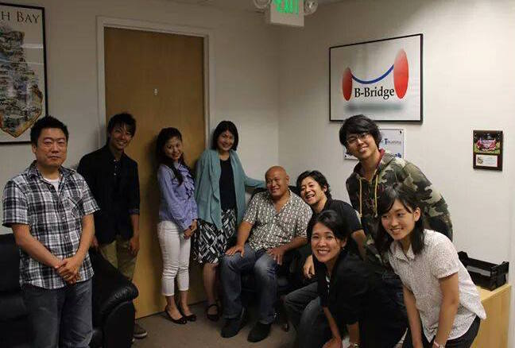
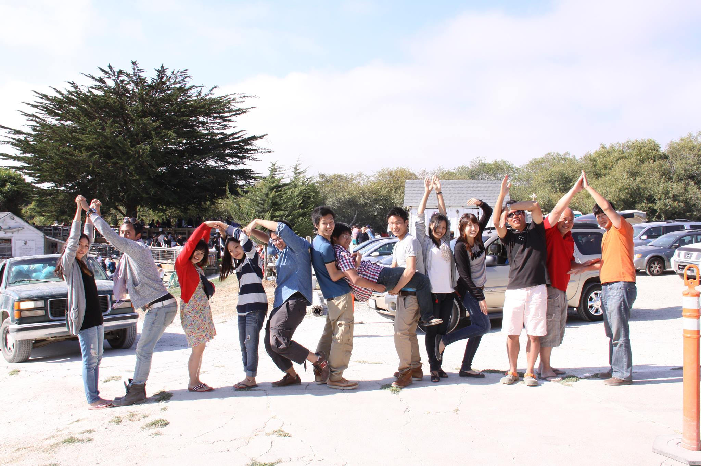

夏にアメリカに行ってやはり自分は変わったと強く実感するようになりました。
今までは新しい事に取り組むにも判断がつかず、なかなか現状から出ていけない自分がいました。最近ではどんどん顔を出し相手が誰であっても気軽に話したりすることができるようになりました。
ひろさんには感謝でいっぱいな大学一年目後半です。
色々な方々に会い話を聞いててふと思ったのが、自分の夢を人に自信を持って説明
できますか？ってこと。
僕の場合確かにパイロットになりたいのは子供の時からの夢であり、それ以上でもそれ以下でもないのです。
普段生活をしていて自分の夢を誰かに話したりするような機会はまずないです。でもいつか話す日は来ます。
大学一年目、夢に対する思いを再確認できるいい時期。残り少ない一年目、まだまだ余裕でやっていけます。
インターンシップというひと夏の挑戦。私がこの一ヶ月間で学び得たものははかり知れません。同じ大学の男女４人でインターンシップ参加を決めた私達ですが、当初は不安もたくさんありました。というのも、渡米のための日程調整、渡航手配、現地での行動など、全て自分達で準備・計画しなければならず、これまでアメリカに行った経験のない私達にとって、「インターン先の方々に迷惑をかけてしまうのではないか・・・」、「この一ヶ月間、果たして上手くいくか？」、「言葉は？」、「お金は？」など、心配は尽きなかったのです。
しかし、インターンシップがいよいよ始まると、そんな心境も一転。インターン先の社長が私達を温かく迎えてくれ、研修という学びの日々に突入しました。それからは、とにかく“今”を一生懸命頑張ることで、心配や不安に悩んでいる暇などありませんでした。
限られた時間の中で、目いっぱいのことを吸収して帰りたいという思い、仕事も遊びも思いっきり楽しみました。私がこのインターンシップの中で、一つ、常に心がけていたことは、「イエスマン」ならぬ「イエスウーマン」になることです。何事にも“チャレンジ！チャレンジ！チャレンジ！”の精神で、社長から持ちかけられた話にはすべて間髪入れず「イエス！」と答えてきたのです。
そのおかげで、時にはゲーム機の営業に同席し、時にはゴルフグローブの新商品の日本で売り出すプロジェクトに取り組み、また時にはＷｅｂデザイナーの方と社長との打ち合わせに参加したこともありました。おかげで、帰国してからも交流が続くような、貴重な人脈を築くことができました。海外で仕事をする多くの方々の価値観に触れ、 “日本から世界へ”と視点が大きく変わる貴重な経験をしました。仕事においても、 毎日定時に出勤、退社する中で、複数ある自分の仕事を同時進行しながら効率良くこなすためにスケジュールを組み、残業も自己責任で行うなど、社会人としての基本でもある自己管理の重要さを学びました。滞在期間中、ゆっくり寝て過ごした日など一日もありませんでしたが、こうして築いた数々の人脈や経験は、私の人生の財産となりました！
今回B-Bridgeのインターンシップに参加させて頂いて、非常に得るものがありました。なにより自分自身が変わることができました。今回の4つのプロジェクトを通して初めて人にしっかりと意見を言うことができました。今まではすぐ人に賛同したり、何も言わなかったりすることが多かったので私にとってこのことは非常に大きかったです。実際インターンが始まる前にみんなでホテルや交通手段の話し合いをした時も、またプロジェクトAでもほとんど意見を出さず、他の8人に迷惑をかえてしまいました。それはとても反省しています。しかしProject BそしてProject Cと進めてゆくうちに、慣れてきたのもあると思いますが、だんだん発現が出来るようになり、最後のプロジェクトで「しっかり意見言えて、堂々としていてすごくいいと思う」とサポーターの方に言ってもらえました。その時は本当に嬉しく、この2週間で変わろうとしていたのでその変化が認められた気がしました。また今まで出会ったことのないようなたくさんの素晴らしい方々のお話を聞かせていただいて、自分の将来について深く考えさせられました。近い未来ではありますがその講義を通して、やりたいことが少し見えたことも参加して得ることのできたひとつです。インターン参加前は自分でも主体的な人間じゃないなと思っていました。たとえば親に「就活するならこの企業がいい」などと言われたら、その企業を調べてしまうような人間でした。自分のやりたいこともよくわからず、だらだらと大学生活を送ってしまっていたのです。しかし今私は将来を考えた上で１年休学して、語学留学をしたいと考えています。
インターンではいろんなことを学びましたが、私はもっと自分から主体的に考え、動くべきだと強く感じました。特に同じ女性である会計士の方のお話は私にとって大きな影響を与えました。 5年後、10年後、20年後のビジョンを持って今どうすべきなのかというのは今までの私の中にはありませんでした。将来をちゃんと考えたときに、英語を使った仕事がしたいとかこの業種に就きたいという強い思いはまだないのですが、今留学して、英語だけでなくアメリカでいろんなことを吸収して学ぶことで将来の選択肢を広げたいと思いました。それができるのも、エンジニアの方や弁護士の方が言っていたように、学生のうちだ」というのも分かりました。人生に必要なものだけを選択するよりも、今は関係なくても点と点でいずれ自分の人生の中でつながってくれればと思います。このように私は2週間という短期間で主観的ではありますが、いい方向に変われたと感じています。インターンの2週間で様々なプログラムをさせていただく中で、来る前と思っていた内容とは少し違うなと正直思いました。しかしこのプログラムをさせてもらって本当に自分のためになったと思っています。特に4つのプロジェクトは私にとって印象深かったです。今までは知っている人としかプレゼンしたことがなかった私にとっては正直苦痛でもありました。プレゼンも紙を見ながら、棒読みで内容も与えられた本をまとめるだけという薄っぺらいプレゼンをしてきたので、どうしていいかわからなかったのです。どのプロジェクトも自分なりに努力して、一番印象に残ったのはプロジェクトCでした。一番Cが手こずっていて、夜の8時過ぎにようやく方向性を3人で決めて、調べ始めました。正直間に合わなくて、駄目だしをかなりされてしまうんじゃないかとかなり不安でした。しかし結果、4チーム内で得点では1位の点数を頂き、涙が出るかと思いました。一番悩んで一番しんどいプロジェクトだったので本当にやってよかったという達成感がありました。私の中で味わったことのないものでした。
今インターンを終えて、心の中にあるのは出会いの感謝の気持ちです。 私の人生の中でB-Bridgeの社長のHiroさんという人に出会えたことはターニングポイントです。 出会いがこんなに大切なものとは知りませんでした。 いつも身内とばかりいて、新たな人とあまり仲良くしない私はいかに人生損してきたことかと思います。Hiroさんが私の中の視点を大きく広げてくれました。これから出会いひとつひとつを大切にして、 自分からコミュニティを広げてつながっていけるように努力します。本当にありがとうございました、そしてこれからも宜しくお願いします。
グローバルで働くということを肌で感じ、自分を見つめ直せる良いきっかけとなります。社会人の方にお会いする経験が無かった分、かなり失敗もしましたし、学ぶことばかりでした。帰国後、圧倒的に自分の経験に賛同してくれる人、社会人との交流もかなり増えました。
プレゼンテーションの経験や分かり易く噛み砕いて話す経験が、これから自分のやっている研究やプログラムを説明することに活かせると思います。
プレゼンテーションの経験や分かり易く噛み砕いて話す経験が、これから自分のやっている研究やプログラムを説明することに活かせると思います。
初めての海外体験であったため、旅行では決して経験できない 現地の仕事の在り方や働く人と触れ合ったことで今後自分が 働き方を決めていく視野が広がったと思う。また知り合った方々は今後の 自分にとってもありがたく素晴らしい関係だ と思う。
社会人とのトークを通して、仕事をする上で最も重要なことは何かを常に考えるようになった。日本人ではない方たちとの会話を通して、「グローバル」とは何かを考えるようになったこと。 外国のよい所を取り入れつつも、外国かぶれになって日本を否定するわけでもなく、両者のよい所を常に取り入れようとする態度、 意識を、将来海外で働くようになっても持っておきたいと感じた。
帰国してから一番変わったのは、自分のことを深く考えるようになったことです。自分がどのような生き方をしたいのか、何を優先的に考えて生きていくのか、など毎日自己分析の繰り返しをするようになりました。それによって、日々の様々な意思決定を自信を持って出来るようになりました。
国際人として日米の会社の特徴を知っておくことで、「世界を見れば日本の当たり前と思う慣行も通用しない」ということを学んだ。それにより日本企業にとっての必要な変革を必要に応じて勧められると思う。
プレゼンテーションでの失敗や頂いたアドバイスを活かして、これから練習を重ねてプレゼンテーション力を高めていけると思う。
性格的に少し積極的になれたと思う。シリコンバレーに20日間滞在したので、海外で生活することのハードルが低くなりました。今の自分の英語力ではダメダメですが、将来チャンスがあれば海外で働いてみたいと思った。就職活動も始まったばかりですが、インターンシップで得た経験は就職活動でも役に立つと思う。